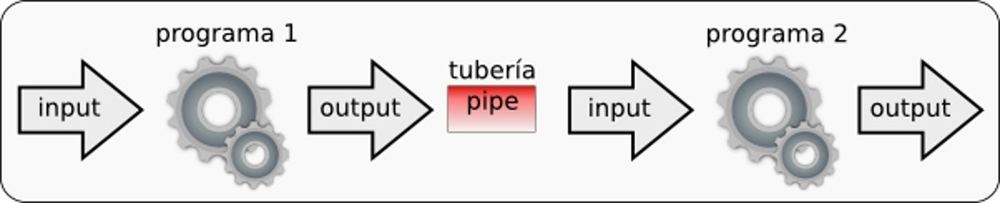
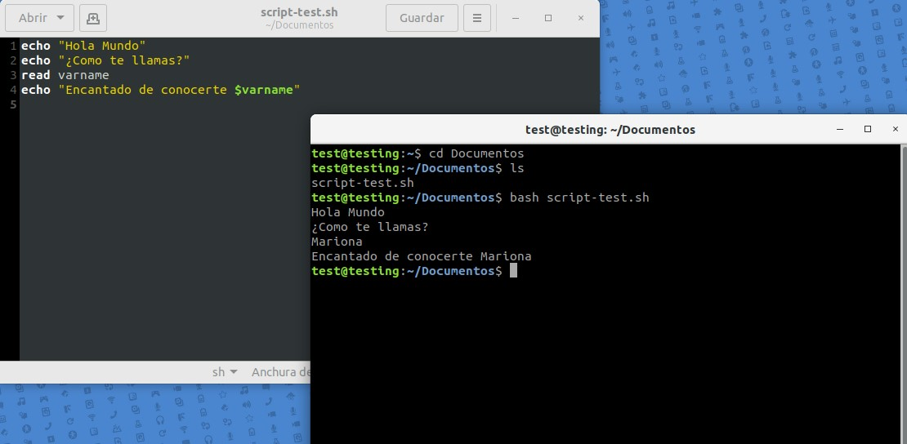
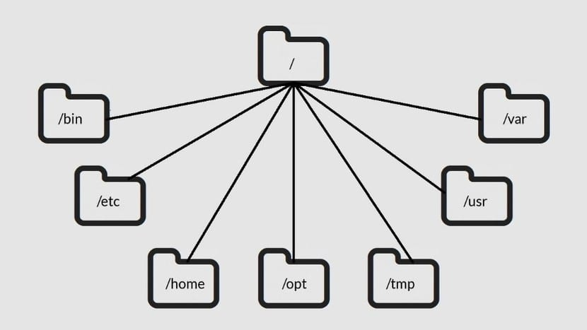
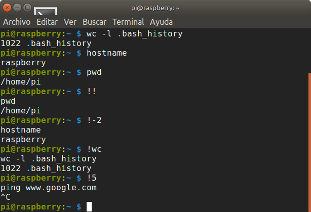

Modulo 5
Curso de linux basico
Categorias de comandos de linux
14-05-2022
| Comandos para manipular ficheros y directorios |
| Comandos para paginar, Visualizar y editar ficheros |
| Comandos para hacer búsquedas de ficheros y patrones |
| Comandos para filtrar ficheros |
| Comandos para compactar y agrupar ficheros |
| Comandos para la comunicación entre usuarios |
| Comandos para desconectarse del sistema |
| Comandos para administrar usuarios y grupos |
| Comandos Variados |
Flujo de datos
Todos los procesos para poder llegar al sistema operativo necesitan de flujos (streams) para poder llegar a él, en el caso de Linux, cuenta con tres flujos de datos principales, además de eso, cada flujo de datos es almacenados en descriptores de ficheros que se identifican con números: estos son: 0 Entrada estándar, 1 Salida estándar y 2 Salida de errores.| 0 La entrada Estandar | En este flujo es donde se pueden tomar los datos que se manejan y no son indicados mediante argumento u opciones. Por defecto se toman a partir del teclado. |
| 1 La salida Estandar | Flujo donde un proceso escribe los resultados de su ejercicio. Por defecto es la terminal donde se invocó el programa. |
| 2 La salida de Errores | Es donde un proceso escribe los posibles errores durante la ejecución. Igual que el anterior, por defecto es el terminal donde se invocó el programa. |
Redireccionamiento
En la interfase de bash de Linux, los flujos de datos se pueden redireccionar libremente hacia distintos ficheros. Esto consiste que la salida de un proceso (estándar o error) puede escribirse en un fichero en lugar de la terminal por defecto, también la entrada puede ser tomada a partir de un fichero en lugar de usar lo escrito a través del teclado. Para identificar o indicar un redireccionamiento se utilizan los signos “mayor que” y “>”, generando dos tipos de construcción:- [x]>salida: que indica el redireccionamiento del flujo de x datos hacia un fichero nombrado salida. De no especificar x la salida será en el terminal por defecto.
- [x]"mayor que"entrada: Indica el redireccionamiento del fichero de entrada hacia flujo de datos x. De no indicarse x se asumirá el estandar.
Tuberias, Pipes
Estos son poderosos mecanismos del Shell, que permite tomar la salida de un comando y pasársela como entrada a otro, tal como una manguera o tubería. La entrada de una tubería puede venir a su ves de la salida de otro comando, lo que permite realizar diversos tipos de filtrado. Estas pueden están formadas por un numero ilimitado de comandos, algo que hay que tener en cuenta que no se ejecutan de una forma secuencial, ósea que no espera que finalice un proceso para empezar con el otro, sino que se va ejecutando de manera concurrente, el carácter usado para separar un comando de otro mediante tuberías es “|”.
Entorno de trabajo en Bash
Un entorno de trabajo en el caso de Linux es la configuración que posee cada usuario durante su interacción con el sistema o para ser más específicos con el Shell. Las características más notables del bash, es la forma en la que se muestra el prompt, los alias y funciones definidas y variables del entorno de forma general, debido a que estas deben representar muchos de los programas y comandos. La facilidad con la que se puede cambiar el entorno de trabajo depende de las capacidades del Shell respectivamente.
Ficheros y perfiles
Para cada usuario existen tres ficheros importantes que permiten definir las características del Shell durante el uso de dicho usuario. Estos constituyen Shells scripts y se les conoce como “ficheros perfiles”.El primero es .bash_profile, que siempre se ejecuta mientras se abra una nueva sesión en el sistema. Cada cuanto el usuario se conecte al sistema se ejecutará un script de esta índole, en todo caso que se use un bash, en lugar de un Shell. Algo interesante es si en todo caso .bash_profile no existiera, se ejecuta otros ficheros como bash_login o .profile, lo que permite tener compatibilidad con sus anteriores versiones. La utilidad de este fichero es colocar las asignaciones a las variables del entorno, siendo exportadas mediante un “export”, además existe un profile general. Que se genera siempre que un usuario inicia sesión en el sistema, antes de su profile particular.
El segundo es .bash_logout, que como el nombre lo explica, se ejecuta al terminar una sesión de trabajo. Los comandos y variables que esta posee son para salvar lo hecho durante la sesión.
Y por ultimo esta .bashrc, este se ejecuta siempre que se invoque un nuevo Shell. Generalmente en esta se colocan las definiciones de funciones y los alias de los comandos, pero antes de ejecutar el .bashrc de cada usuario por defecto ejecuta primero a /etc/bashrc.

Ejecución de comandos en Bash
Existen dos maneras para poder ejecutar un Shell script en el bash, estas son:La primera invocándolo directamente por su nombre. Para esto se requiere de ciertas características como, que el camino del fichero que lo representa debe encontrase con la variable PATH, de lo contrario será necesario especificar la ruta del fichero actual, aparte de eso el usuario en uso debe poseer los permisos de ejecución adecuados. Cuando ya se tenga todo esto lo que sucederá es que se creara un Shell hijo quien será el que realmente ejecute al script.
La según opción es usar el comando source. De esta manera se ejecutará un escript en el Shell actual, debido a eso no será necesario que el fichero correspondiente posea permisos de ejecución. Un ejemplo sencillo es que si se quiere modificar el .bash_profile, no es requerido desconectarlo y conectarlo nuevamente al sistema, sino que solamente se puede realizar la siguiente línea de comando:
$ source .bash_profile

Instalación de Ubuntu y Virtual Box
Actividades del Modulo
|

© 2022 Grupo5
© Derechos reservados